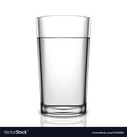

 Water
How can we even have the conversationa bout the world's best beverages without mentioning the G.O.A.T.? Water has been at the top and will always be the number one beverage people all around the world consume. There are many ways to prepare water including iced, steamed, and even boiled, but this guide will only cover the standard method of enjoyment.
Here's what you'll need
- 2 cups water
- 3 cups Water bottle
How to prepare
- The first step is to gather all of the ingredients together.
- The next step is to find a source of water nearby. This could be anything from a water bottle at the supermarket, a stream, or even your own sink.
- After the water has been secured, pour the contents into the water bottle careful to not get any in your mouth prematurely
- The final step is to tilt the water bottle back over your mouth and try to catch as much water in your mouth hole as possible without spilling droplets on the floor.
- DO NOT ENJOY WATER OFF THE FLOOR OR OTHERS. This is considered rude practice and should be avoided.
return to Home